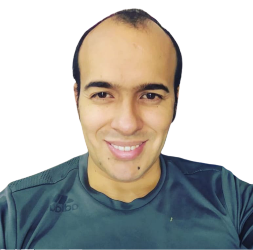

JUAN DAVID RAMIREZ CARDOZO
Docente especializado en gerencia de proyectos educativos con experiencia de 10 años en educación y aseguramiento de la calidad educativa
- PERFIL PROFESIONAL
- EDUCACIÓN
- U. Pedagógica Nacional
- Licenciado en Recreación
- U. Cooperativa de Colombia
- Especializacion en gerencia de proyectos educativos
- Fundación universitaria iberoamericana
- Magister actividad física : entrenamiento y gestión deportiva
- EXPERIENCIA
- Coordinador proyecto nuevas tendencias deportivas
- Instructor cultura fisica
- Coordinador departamental deportes
- HABILIDADES
- Liderazgo
- Comunicación
- Trabajo en equipo
- Empatia
Licenciado en Recreación,Especialista en gerencia de proyectos educativos, con experiencia de 5 años en la coordinación de procesos relacionados con el diseño, gestión y desarrollo curricular, experto en evaluación y diagnóstico de procesos pedagógicos e implementación de planes de mejora continúa hacia la calidad y excelencia educativa. Poseo competencias en herramientas tecnológicas basadas en educación virtual, además de haberme desempeñado en programas de actividad física , Recreación y deporte . Por último he sido Instructor del servicio nacional de aprendizaje SENA de cultura física por más de 6 años.
2006 - 2012
Pregrado
2017 - 2018
Posgrado
2018 - 2020
Posgrado
Universidad pedagógica nacional
2021 - 2022
Realizar la integración y coordinación de las actividades de NTD - seguimiento Capacitación en preparación para el desarrollo del talento deportivo, en el marco del proyecto SAR
Servicio Nacional de aprendizaje
2015 - 2022
Prestar los servicios profesionales de manera autonóma e independiente , para formar en competencias Transversales a traves de herramientas pedagogicas en los programas de modalidad presencial de la red de conocimiento de Institucional de Pedagogía en el area tematica de Actividad Física y Hábitos de Vida Saludables, garantizando el cumplimiento del proceso educativo de los aprendices del Centro de Servicios Financieros, por los terminos establecidos
Coldeportes Nacional
2013- 2015
Garatntizar las acciones para la gestión , desarrollo y fomento del deportem segun su asignación